library(knitr)In the previous section we learnt a bit of the preparatory steps needed before building predictive models. In this section we will learn about:
Linear regression is a widely accepted technique when building models for business because it is an easy technique to explain results and impacts of certain variables.
From a predictive modelling perspective the variables are of 2 types: dependent and independent.
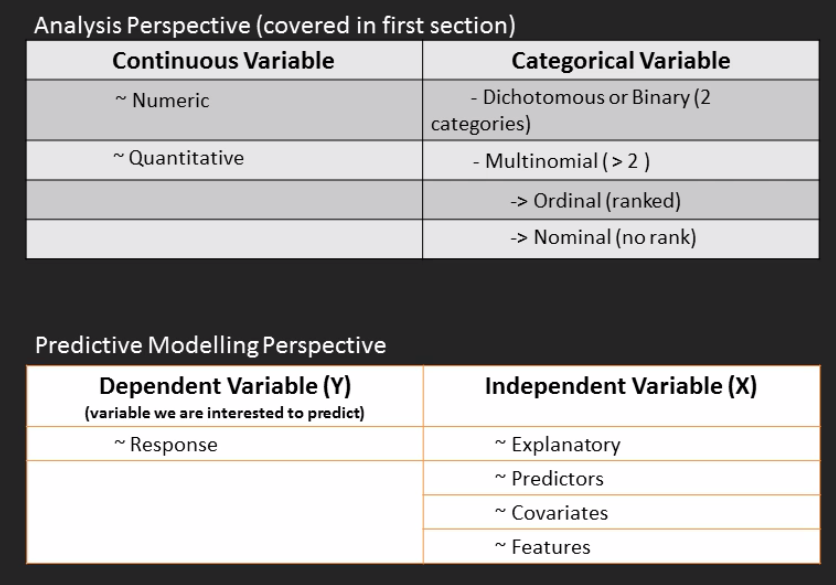
Linear regression is used when your y variable is continuous.
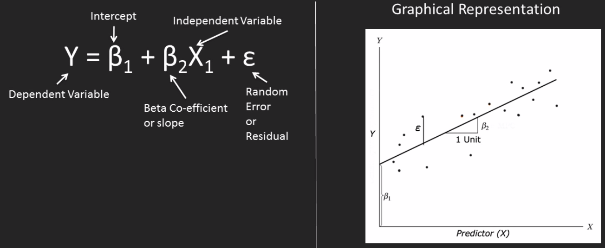
We split the data into training and testing. The training data is the one we use to train the model, then we use the model created to use the test data to check our predictions.
## LOADING THE DATA FROM THE PACKAGE
# install.packages('car')
require(car)
data(Prestige, package = 'car')
Prestige = na.omit(Prestige)
# In order to separate training and testing set, the first thing we need to do is set a seed. This is done to make sure that the randomiser starts always at the same point.
set.seed(100)
# There are multiple ways of separating a dataset. This uses the sample() function as a method. 70% to the train data and 30% to the test.
train_rows = sample(1:nrow(Prestige), size = 0.7*nrow(Prestige))
training = Prestige[train_rows,]
test = Prestige[-train_rows,]Let’s build a first linear model
# For now we have selected a couple of random variables for the first model
lmmod = lm(prestige ~ income + education, data = training)
lmmod##
## Call:
## lm(formula = prestige ~ income + education, data = training)
##
## Coefficients:
## (Intercept) income education
## -6.648593 0.001312 4.168073This can be interpreted as
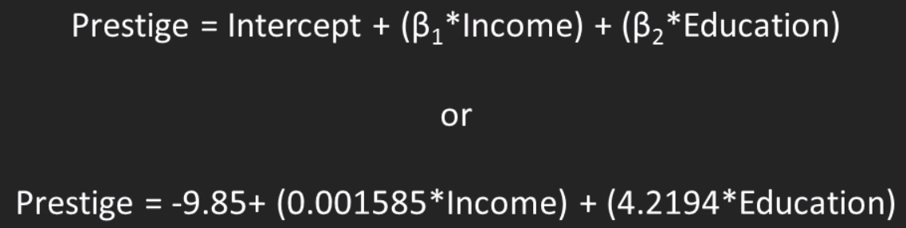
The model we have builts contains an incredible amount of information, you can check it by typing names(lmmod)
names(lmmod)## [1] "coefficients" "residuals" "effects" "rank" "fitted.values" "assign" "qr" "df.residual" "xlevels" "call" "terms" "model"The most easy way to check the model is by using summary(). We will learn how to interpret the summary() output in the next section.
summary(lmmod)##
## Call:
## lm(formula = prestige ~ income + education, data = training)
##
## Residuals:
## Min 1Q Median 3Q Max
## -16.8519 -4.6201 -0.5812 5.4547 15.3010
##
## Coefficients:
## Estimate Std. Error t value Pr(>|t|)
## (Intercept) -6.6485929 3.7971583 -1.751 0.0847 .
## income 0.0013115 0.0002916 4.498 2.90e-05 ***
## education 4.1680732 0.4162643 10.013 8.46e-15 ***
## ---
## Signif. codes: 0 '***' 0.001 '**' 0.01 '*' 0.05 '.' 0.1 ' ' 1
##
## Residual standard error: 7.502 on 65 degrees of freedom
## Multiple R-squared: 0.7993, Adjusted R-squared: 0.7931
## F-statistic: 129.4 on 2 and 65 DF, p-value: < 2.2e-16# install.packages('broom')
require(broom)
# Use the tidy() function from the broom package
lmmod_df = tidy(lmmod)
lmmod_df## term estimate std.error statistic p.value
## 1 (Intercept) -6.648592860 3.7971582719 -1.750939 8.467428e-02
## 2 income 0.001311547 0.0002915664 4.498280 2.896860e-05
## 3 education 4.168073239 0.4162643020 10.013045 8.459886e-15# To predict use the predict() function
require(broom)
predicted = predict(lmmod, newdata = test)
predicted## gov.administrators general.managers accountants purchasing.officers chemists biologists vocational.counsellors university.teachers primary.school.teachers
## 64.19377 78.39352 58.73706 52.57767 65.30957 67.07839 69.37115 76.28365 57.52818
## secondary.school.teachers osteopaths.chiropractors nursing.aides pharmacists bookkeepers computer.operators postal.clerks service.station.attendant cooks
## 66.74292 77.61322 37.31044 70.42986 46.23660 46.37972 40.22778 37.84874 29.69908
## bartenders launderers farm.workers slaughterers.2 tool.die.makers sheet.metal.workers electronic.workers sewing.mach.operators aircraft.repairmen
## 33.93441 27.83803 31.36876 31.92897 45.95604 36.97353 35.03385 23.67769 45.56885
## construction.foremen longshoremen bookbinders
## 39.34287 34.47196 33.73230Let’s compute the accuracy by computing the mean square error (MSE) and the mean absolute percentage error (MAPE). The lower the error the better.
# MSE
mean((test$prestige - predicted)^2)## [1] 54.15005# MAPE
mean(abs(test$prestige - predicted)/test$prestige)## [1] 0.1571824In the previous section we learnt how to built a predictive model with only the given variables. However, there might be cases where interactions between variables might be massively valuable. In this section we will learn:
Let’s re-run the summary of the linear model and start de-coding everthing it shows.
summary(lmmod)##
## Call:
## lm(formula = prestige ~ income + education, data = training)
##
## Residuals:
## Min 1Q Median 3Q Max
## -16.8519 -4.6201 -0.5812 5.4547 15.3010
##
## Coefficients:
## Estimate Std. Error t value Pr(>|t|)
## (Intercept) -6.6485929 3.7971583 -1.751 0.0847 .
## income 0.0013115 0.0002916 4.498 2.90e-05 ***
## education 4.1680732 0.4162643 10.013 8.46e-15 ***
## ---
## Signif. codes: 0 '***' 0.001 '**' 0.01 '*' 0.05 '.' 0.1 ' ' 1
##
## Residual standard error: 7.502 on 65 degrees of freedom
## Multiple R-squared: 0.7993, Adjusted R-squared: 0.7931
## F-statistic: 129.4 on 2 and 65 DF, p-value: < 2.2e-16Starting with the coefficients section:
Remember from statistics, that p-values are statistical tests, where we have an initial hypothesis (null hypothesis) and then an alternative hypothesis. The idea is to calculate p-values to determine if we reject or accept the initial hypothesis. As an example, in this case, our null hypothesis would be that there is no relationship between the input independent variable X and the dependent variable Y. In the example above, you can see how significant is each independent variable compared with Y (prestige) variable. Significance levels can vary, but common main practice is that a significance level below 5% is acceptable. This would be represented by the ’*’. Aynthing with a star to 3 stars, is a significant variable, which means that we reject the null hypothesis (no relatioship between X and Y) and say there is some kind of relationship between X and Y.
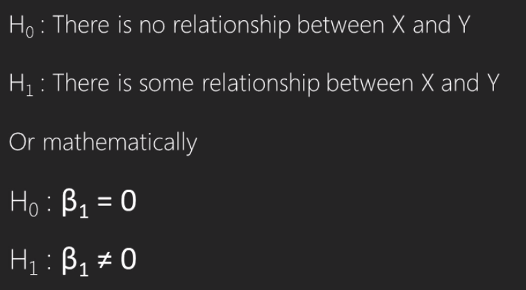
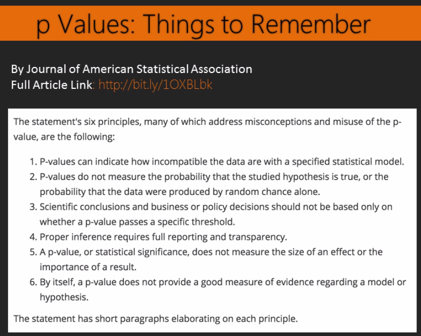
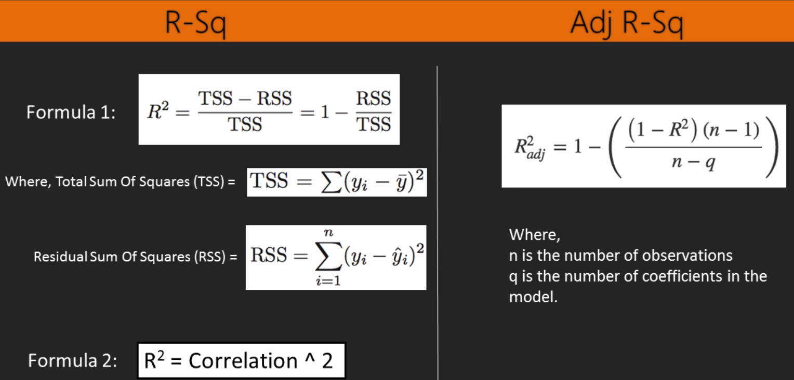
Moving on to the ‘metrics’ section:
AIC(lmmod)## [1] 471.9643BIC(lmmod)## [1] 480.8424If we have introduced the idea that having simpler models is better by saying that a way to compare different models should be done by checking the adjusted r-squared and not the multiple r-squared, that means there variables that, when added, don’t add a huge amount of explanation of the Y behaviour. One of the possible reasons for this is multi-collinearity. As an example, you might a model with only 1 input variable, being that variable significant. However, by adding another input variable, the initial one that was significant, has become insignificant. How is that possible? Basically, that means that both variables kind of explain the same things, and there is no need of having both in the model. This can be checked using the VIF (variance inflation factor).
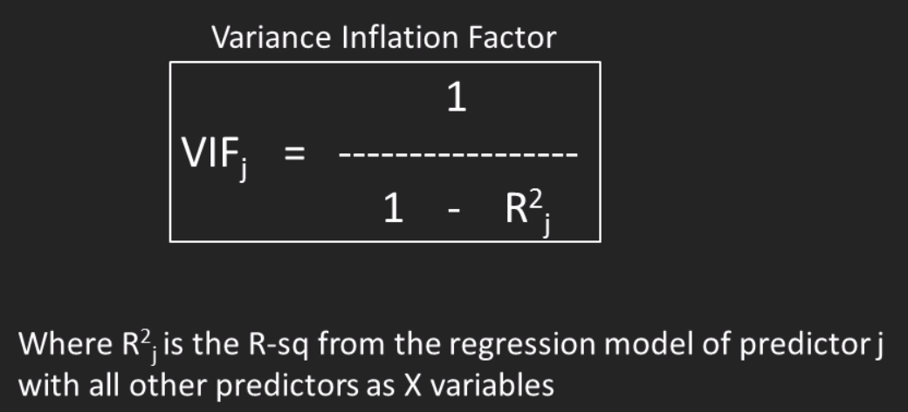
If a variable has high VIF, that means that the information provided by that variable can be explained by other variables in the model. As said above, the presence of a variable with high inflation can be redundant. Typically, a variable with VIF > 4, is said to have multi-collinearity.
car::vif(lmmod)## income education
## 1.500155 1.500155Interaction terms are added when we think a look at 2 variables together rather than on its own might be useful. For example, in a medical insurance world, age and being a smoker will be useful to predict risk, but the combination of both might be even more predicted. In other words, maybe young smokers might be less risky than old smokers. Returning to the dataset we are working with, we might want to investigate the interaction between education and income. If you check the summary results, we can see that the interaction is significant and has improved the adjusted r-squared by 2%.
# The ':' represents product between income and education
lmmod_1 = lm(prestige ~ income + education + income:education, data = training)
summary(lmmod_1)##
## Call:
## lm(formula = prestige ~ income + education + income:education,
## data = training)
##
## Residuals:
## Min 1Q Median 3Q Max
## -16.6526 -4.9203 -0.5159 4.3688 14.8160
##
## Coefficients:
## Estimate Std. Error t value Pr(>|t|)
## (Intercept) -2.504e+01 8.496e+00 -2.947 0.00447 **
## income 4.533e-03 1.372e-03 3.305 0.00156 **
## education 5.497e+00 6.843e-01 8.034 2.81e-11 ***
## income:education -2.253e-04 9.390e-05 -2.399 0.01934 *
## ---
## Signif. codes: 0 '***' 0.001 '**' 0.01 '*' 0.05 '.' 0.1 ' ' 1
##
## Residual standard error: 7.241 on 64 degrees of freedom
## Multiple R-squared: 0.8158, Adjusted R-squared: 0.8072
## F-statistic: 94.5 on 3 and 64 DF, p-value: < 2.2e-16We could also specify non-linear terms by making use of the I() function in R. Let’s say for example that we think there is a relationship of education to the power of 2 that can explain prestige better.
# By adding -1 we can force the model to eliminate the intercept to the created model.
lmmod_1_1 = lm(prestige ~ income + I(education^2) - 1, data = training)
summary(lmmod_1_1)##
## Call:
## lm(formula = prestige ~ income + I(education^2) - 1, data = training)
##
## Residuals:
## Min 1Q Median 3Q Max
## -25.929 -2.501 4.125 10.775 16.988
##
## Coefficients:
## Estimate Std. Error t value Pr(>|t|)
## income 0.0017432 0.0003884 4.488 2.95e-05 ***
## I(education^2) 0.2646857 0.0223054 11.866 < 2e-16 ***
## ---
## Signif. codes: 0 '***' 0.001 '**' 0.01 '*' 0.05 '.' 0.1 ' ' 1
##
## Residual standard error: 10.03 on 66 degrees of freedom
## Multiple R-squared: 0.9604, Adjusted R-squared: 0.9592
## F-statistic: 800.4 on 2 and 66 DF, p-value: < 2.2e-16Finally, we can also include non-continuous variables, in other words, categorical variables to the model. Luckily for use, we don’t need to tell the linear model that we are adding a categorical variable. We can simply add it, and it with create dummy variables (i.e., flafs for each category representing an ifelse scenario).
# Categorical variables will show all except 1 of the categories.
lmmod_1_2 = lm(prestige ~ income + education + type, data = training)
summary(lmmod_1_2)##
## Call:
## lm(formula = prestige ~ income + education + type, data = training)
##
## Residuals:
## Min 1Q Median 3Q Max
## -12.9067 -5.0913 0.6073 4.6693 18.9229
##
## Coefficients:
## Estimate Std. Error t value Pr(>|t|)
## (Intercept) -0.8802776 6.1734227 -0.143 0.88707
## income 0.0009797 0.0002989 3.278 0.00171 **
## education 3.8351980 0.8137227 4.713 1.39e-05 ***
## typeprof 5.0908556 4.6935336 1.085 0.28221
## typewc -4.6698763 3.0839176 -1.514 0.13496
## ---
## Signif. codes: 0 '***' 0.001 '**' 0.01 '*' 0.05 '.' 0.1 ' ' 1
##
## Residual standard error: 6.879 on 63 degrees of freedom
## Multiple R-squared: 0.8364, Adjusted R-squared: 0.826
## F-statistic: 80.51 on 4 and 63 DF, p-value: < 2.2e-16The fitted values are the predicted by the model for the observations and the training data. It can be computed using:
## ONLY RUNNING ONE OF THE METHODS (in this case my preferred due to intuition)
# fitted(lmmod)
# lmmod$fitted.values
predict(lmmod, newdata=training)## medical.technicians veterinarians real.estate.salesmen physicists collectors bus.drivers welders secretaries commercial.travellers social.workers
## 53.45488 78.88400 48.74568 73.00644 46.25187 32.24023 34.85744 46.95278 51.25745 60.88969
## buyers aircraft.workers typesetters construction.labourers rotary.well.drillers firefighters lawyers physio.therapsts auto.repairmen masons
## 49.75993 38.56789 43.50736 29.82347 39.36111 44.48927 84.34626 56.79896 34.71322 28.67620
## mail.carriers radio.tv.repairmen receptionsts policemen commercial.artists computer.programers railway.sectionmen elevator.operators shipping.clerks ministers
## 39.00898 43.38750 43.17173 50.56941 47.70300 62.04565 27.31148 29.64336 37.81692 59.93438
## electricians textile.labourers physicians slaughterers.1 train.engineers pilots draughtsmen textile.weavers funeral.directors architects
## 44.11400 26.01496 93.06649 31.92897 40.33898 62.89730 53.87692 27.06302 47.72851 76.28190
## canners plumbers telephone.operators claim.adjustors radio.tv.announcers nurses auto.workers carpenters surveyors house.painters
## 26.75733 37.15786 41.30366 46.36800 56.24554 51.33708 36.10967 29.14436 52.73459 31.87029
## sales.supervisors mining.engineers electrical.linemen machinists insurance.agents sales.clerks taxi.drivers travel.clerks bakers civil.engineers
## 44.17824 68.82918 41.97930 38.84114 52.36525 38.64270 31.94420 49.20146 30.28587 68.79330
## librarians file.clerks typists tellers.cashiers office.clerks janitors psychologists economists
## 60.34582 47.69904 45.37132 40.91037 44.54477 27.54010 62.91695 64.09503Residuals are the difference between the real values of the dataset and what your model predicts. You can check it here:
lmmod$residuals## medical.technicians veterinarians real.estate.salesmen physicists collectors bus.drivers welders secretaries commercial.travellers social.workers
## 14.04512130 -12.18399966 -1.64567784 4.59356107 -16.85187300 3.65977182 6.94256117 -0.95278074 -11.05744728 -5.78969134
## buyers aircraft.workers typesetters construction.labourers rotary.well.drillers firefighters lawyers physio.therapsts auto.repairmen masons
## 1.34007499 5.13210965 -1.30735796 -3.32346770 -4.06111174 -0.98927364 -2.04625709 15.30103667 3.38678322 7.52379933
## mail.carriers radio.tv.repairmen receptionsts policemen commercial.artists computer.programers railway.sectionmen elevator.operators shipping.clerks ministers
## -2.90897938 -6.18750182 -4.47173431 1.03058562 9.49700224 -8.24564574 -0.01148160 -9.54336460 -6.91691527 12.86562041
## electricians textile.labourers physicians slaughterers.1 train.engineers pilots draughtsmen textile.weavers funeral.directors architects
## 6.08599729 2.78503701 -5.86649422 -6.72897035 8.56101550 3.20270299 6.12307988 6.23697839 7.17149329 1.81809813
## canners plumbers telephone.operators claim.adjustors radio.tv.announcers nurses auto.workers carpenters surveyors house.painters
## -3.55733490 5.74214333 -3.20365779 4.73200093 1.35446157 13.36292122 -0.20966570 9.75563709 9.26541347 -1.97028765
## sales.supervisors mining.engineers electrical.linemen machinists insurance.agents sales.clerks taxi.drivers travel.clerks bakers civil.engineers
## -2.67824445 -0.02918486 -1.07929701 5.35886261 -5.06524753 -12.14269680 -6.84420357 -13.50145859 8.61413367 4.30669619
## librarians file.clerks typists tellers.cashiers office.clerks janitors psychologists economists
## -2.24582036 -14.99903915 -3.47131945 1.38962589 -8.94476787 -10.24009997 11.98305365 -1.89502865Given that the idea scenario would be to have all residuals being 0, we want to have a deeper understanding of what the errors look like and how to improve them. In this section we will focus on:
par(mfrow=c(2,2))
plot(lmmod)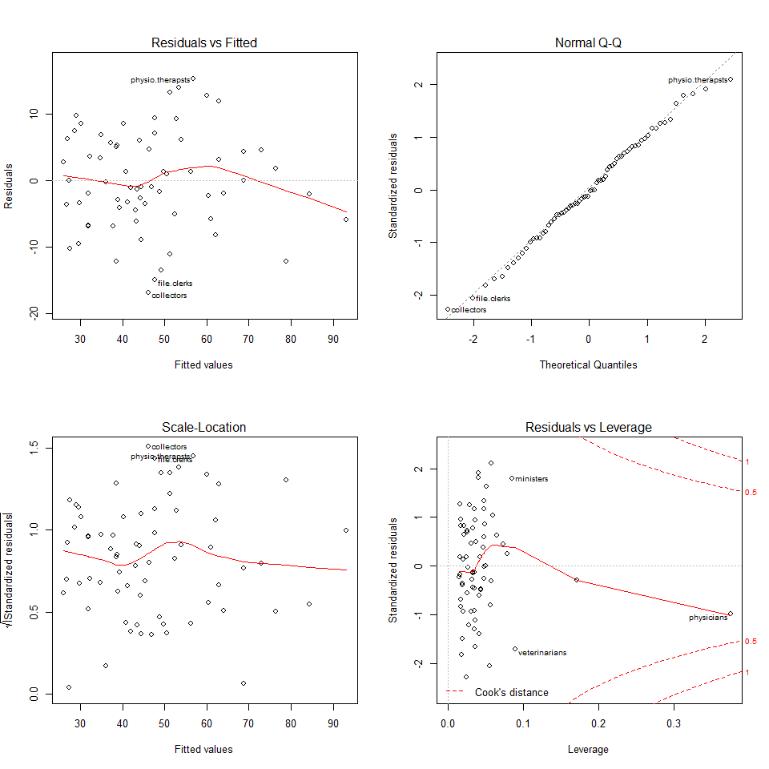
# install.packages('lmtest')
require(lmtest)
lmtest::bptest(lmmod)##
## studentized Breusch-Pagan test
##
## data: lmmod
## BP = 10.26, df = 2, p-value = 0.005916Normal Q-Q. The idea is to check that the residuals follow a normal distribution. Ideally, the points should fall in the diagonal dotted line.
Residuals vs Leverage. Leverage is how much each data point influences the regression. The plot also contours values (you can see a dotted red line with the value of Cook’s distance).
Cook’s distance shows how much the fitted values would change if an observation was removed. Generally, points that are 4 times bigger than the mean are considered influential. Checking this with diagnostic plots:
cooks.distance(lmmod)## medical.technicians veterinarians real.estate.salesmen physicists collectors bus.drivers welders secretaries commercial.travellers social.workers
## 5.121758e-02 9.421145e-02 2.485035e-04 9.246853e-03 4.299623e-02 3.211999e-03 1.124919e-02 1.999259e-04 1.440219e-02 1.267686e-02
## buyers aircraft.workers typesetters construction.labourers rotary.well.drillers firefighters lawyers physio.therapsts auto.repairmen masons
## 1.773369e-04 4.129072e-03 1.654098e-04 2.507217e-03 2.600600e-03 2.017280e-04 6.188123e-03 8.985199e-02 2.216141e-03 2.240579e-02
## mail.carriers radio.tv.repairmen receptionsts policemen commercial.artists computer.programers railway.sectionmen elevator.operators shipping.clerks ministers
## 1.002761e-03 3.885480e-03 5.301462e-03 1.333838e-04 8.977667e-03 1.563711e-02 4.367387e-08 2.050457e-02 6.034056e-03 1.004034e-01
## electricians textile.labourers physicians slaughterers.1 train.engineers pilots draughtsmen textile.weavers funeral.directors architects
## 3.962838e-03 2.377200e-03 1.960902e-01 1.012482e-02 2.274477e-02 5.179989e-03 5.005035e-03 1.254238e-02 5.320907e-03 1.820326e-03
## canners plumbers telephone.operators claim.adjustors radio.tv.announcers nurses auto.workers carpenters surveyors house.painters
## 3.620513e-03 6.875631e-03 2.142886e-03 3.002536e-03 2.752514e-04 4.697123e-02 7.295688e-06 2.994786e-02 1.527737e-02 7.840218e-04
## sales.supervisors mining.engineers electrical.linemen machinists insurance.agents sales.clerks taxi.drivers travel.clerks bakers civil.engineers
## 8.491501e-04 2.668811e-07 2.430982e-04 4.528659e-03 2.656521e-03 3.362028e-02 9.047807e-03 1.981638e-02 1.666161e-02 5.778753e-03
## librarians file.clerks typists tellers.cashiers office.clerks janitors psychologists economists
## 1.943399e-03 8.232323e-02 3.416426e-03 5.303100e-04 1.410296e-02 2.801146e-02 4.795874e-02 1.135135e-03car::influenceIndexPlot(lmmod, id.n = 5)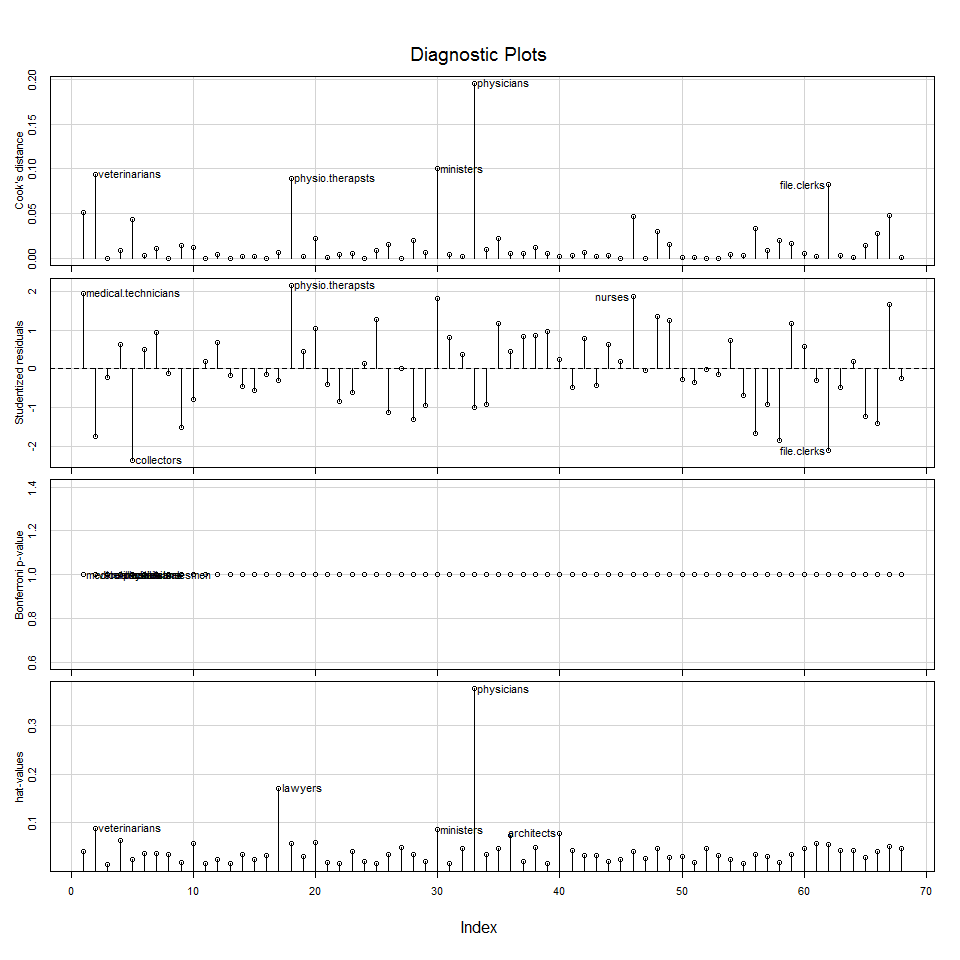
Given that this is one of the plots I really like to check, it is worth mentioning that the plot you see above is a plot showing is the general information about the model. If you want to see the contribution of each variable you can use the residualPlots() function from the cars package.
car::residualPlots(lmmod)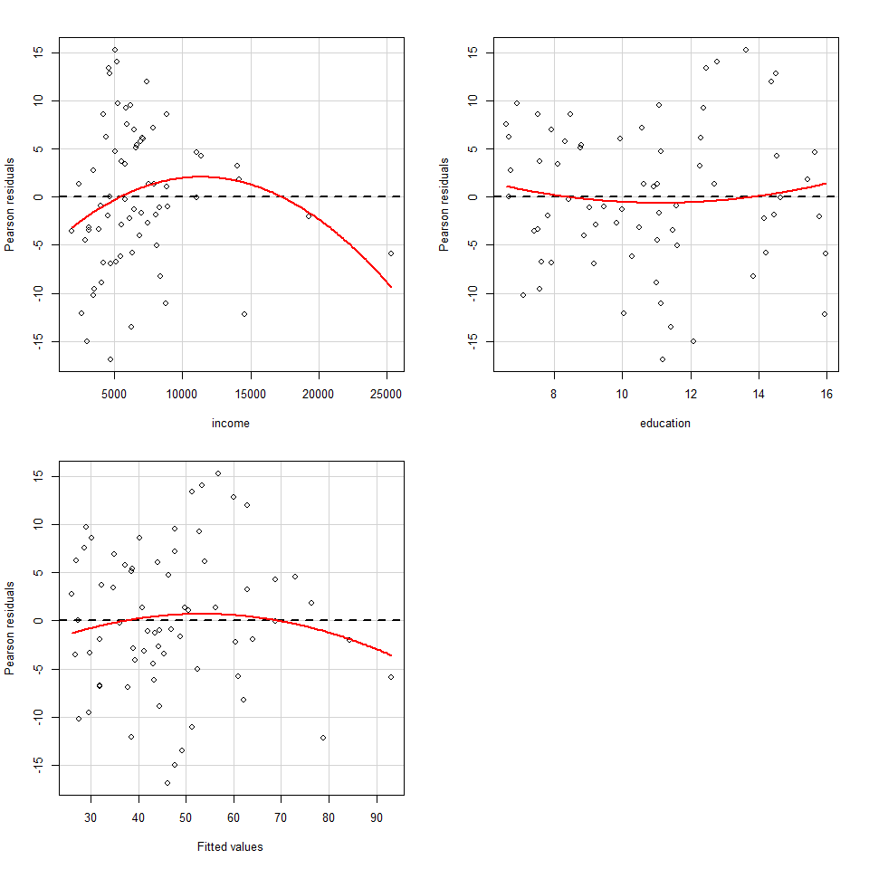
## Test stat Pr(>|t|)
## income -1.939 0.057
## education 0.743 0.460
## Tukey test -1.130 0.258If you check the results, we clearly see a significant curvature in income compared to education. This is the typical example where we would seek to transform the variable. The new model shows that the transformation of the income variable is not flat for the Residuals vs Fitted and the adjusted-rsquared has improved 3%.
lmmod_2 = lm(prestige ~ log(income) + education, data = training)
summary(lmmod_2)##
## Call:
## lm(formula = prestige ~ log(income) + education, data = training)
##
## Residuals:
## Min 1Q Median 3Q Max
## -16.7082 -4.6365 -0.2895 4.5747 15.1588
##
## Coefficients:
## Estimate Std. Error t value Pr(>|t|)
## (Intercept) -99.2524 17.1611 -5.784 2.27e-07 ***
## log(income) 11.7078 2.1849 5.358 1.18e-06 ***
## education 4.1309 0.3855 10.715 5.31e-16 ***
## ---
## Signif. codes: 0 '***' 0.001 '**' 0.01 '*' 0.05 '.' 0.1 ' ' 1
##
## Residual standard error: 7.154 on 65 degrees of freedom
## Multiple R-squared: 0.8174, Adjusted R-squared: 0.8118
## F-statistic: 145.5 on 2 and 65 DF, p-value: < 2.2e-16car::residualPlots(lmmod_2)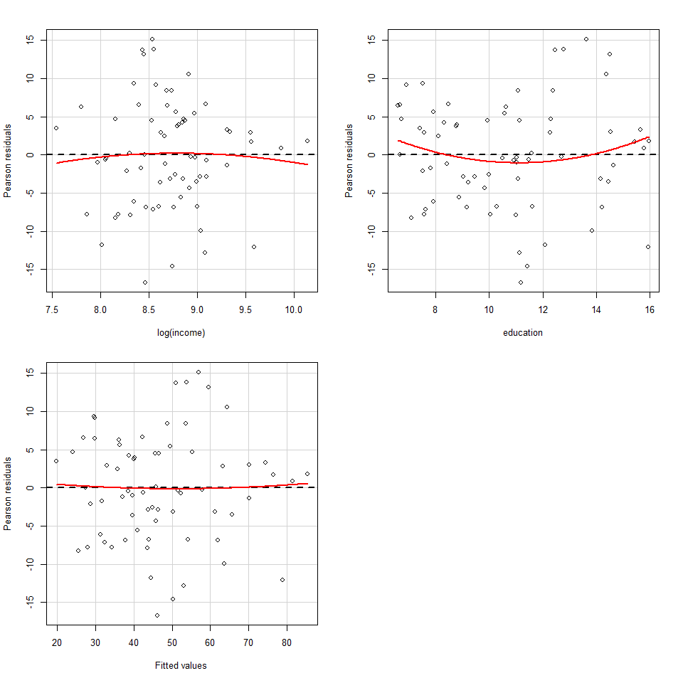
## Test stat Pr(>|t|)
## log(income) -0.351 0.726
## education 1.256 0.214
## Tukey test 0.184 0.854Until now we have learnt how to build a regression model and how to check the basic performance of that model, but we haven’t yet looked at building multiple models that might increase performance and how to build them. In this section we will use:
Best subsets technique chooses the best model for each size based on-predetermined metrics such as adjusted r-squared, BIC, etc. A way to perform best subsets is to use the regsubsets() function from the leaps package.
# install.packages('leaps')
require(leaps)
regsubsMod = regsubsets(prestige ~ education + income + type + women, data = Prestige)
regsubsMod## Subset selection object
## Call: regsubsets.formula(prestige ~ education + income + type + women,
## data = Prestige)
## 5 Variables (and intercept)
## Forced in Forced out
## education FALSE FALSE
## income FALSE FALSE
## typeprof FALSE FALSE
## typewc FALSE FALSE
## women FALSE FALSE
## 1 subsets of each size up to 5
## Selection Algorithm: exhaustiveplot(regsubsMod, scale = "bic")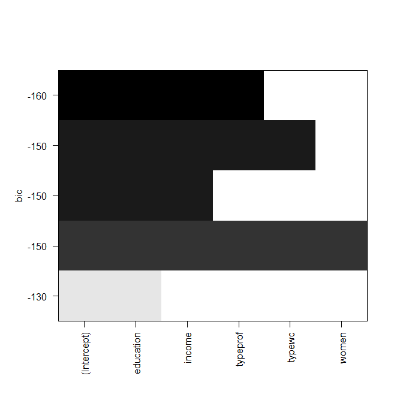
How to interpret this chart? We have set the scale to be the BIC metric, and the models will be built to be compared against this. Each rows of the chart represents 1 model, therefore, given the dataset that we use, we see 5 rows. If a model contains a specific variable on the x axis, the row is coloured in black. As we mentioned earlier about BIC, the lower the BIC, the better. In our case, the best model has a BIC of -160 and contains education, income and type == prof.
This is a great opportunity to analyse all interactions by using the asterisk instead of the plus symbol. In this case, the best model giving the highest adjusted r-squared is represented by the one using income, education, typeof == prof, income x typeof == prof, income x typeof == wc, education x income x typeof == prof, education x income x women, education x income x typeof == prof x women.
regsubsMod2 = regsubsets(prestige ~ education * income * type * women, data = Prestige)
plot(regsubsMod2, scale = "adjr2")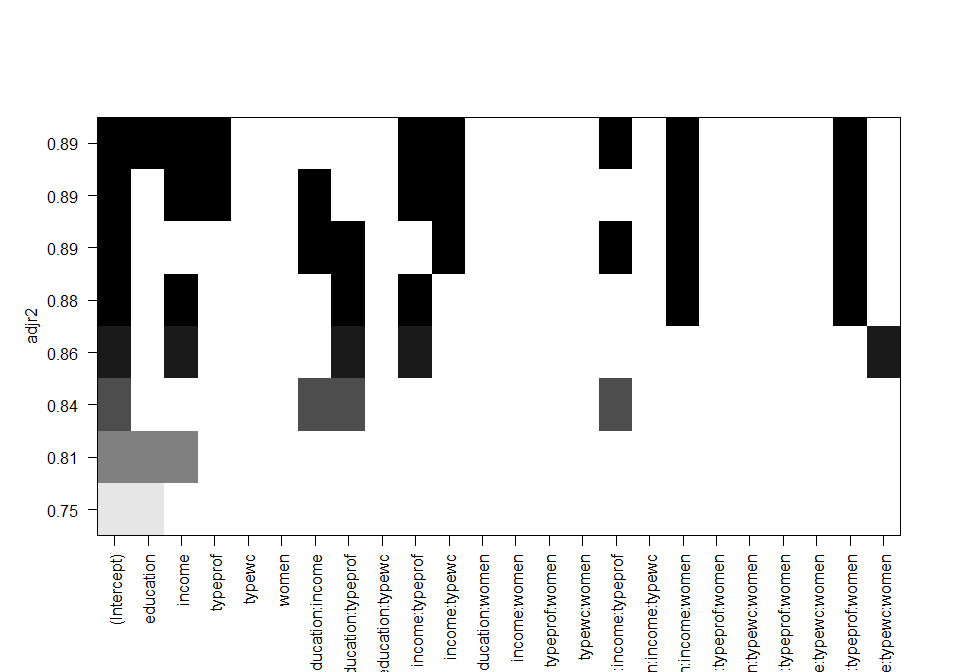
Let’s build that model to check what it looks like. Clearly the model has incredibly improved from the 0.79 adjusted r-squared to the 0.89 showed in the graph above and the summary below.
lmmod_3 = lm(prestige ~ income +
education +
ifelse(type == 'prof',1,0) +
I(income * ifelse(type == 'prof',1,0)) +
I(income * ifelse(type == 'prof',1,0)) +
I(education * income * ifelse(type == 'prof',1,0)) +
I(education * income * women) +
I(education * income * ifelse(type == 'prof',1,0) * women)
, data = Prestige)
summary(lmmod_3)##
## Call:
## lm(formula = prestige ~ income + education + ifelse(type == "prof",
## 1, 0) + I(income * ifelse(type == "prof", 1, 0)) + I(income *
## ifelse(type == "prof", 1, 0)) + I(education * income * ifelse(type ==
## "prof", 1, 0)) + I(education * income * women) + I(education *
## income * ifelse(type == "prof", 1, 0) * women), data = Prestige)
##
## Residuals:
## Min 1Q Median 3Q Max
## -14.7716 -3.0627 0.8038 3.6038 13.0249
##
## Coefficients:
## Estimate Std. Error t value Pr(>|t|)
## (Intercept) 3.567e+00 4.415e+00 0.808 0.42132
## income 4.129e-03 4.879e-04 8.463 4.50e-13 ***
## education 8.130e-01 6.276e-01 1.295 0.19852
## ifelse(type == "prof", 1, 0) 4.773e+01 6.414e+00 7.442 5.66e-11 ***
## I(income * ifelse(type == "prof", 1, 0)) -6.315e-03 1.331e-03 -4.746 7.78e-06 ***
## I(education * income * ifelse(type == "prof", 1, 0)) 1.961e-04 7.410e-05 2.647 0.00959 **
## I(education * income * women) 4.199e-06 9.086e-07 4.622 1.27e-05 ***
## I(education * income * ifelse(type == "prof", 1, 0) * women) -4.711e-06 1.025e-06 -4.595 1.40e-05 ***
## ---
## Signif. codes: 0 '***' 0.001 '**' 0.01 '*' 0.05 '.' 0.1 ' ' 1
##
## Residual standard error: 5.885 on 90 degrees of freedom
## Multiple R-squared: 0.89, Adjusted R-squared: 0.8815
## F-statistic: 104.1 on 7 and 90 DF, p-value: < 2.2e-16Another method for searching better models is stepwise regression. Stepwise regression can be of 2 kinds, adding or removing variables one by one. My personal approach has always been towards the removal of variables. Stepwise then uses a defined metric to decide is the model is better or worse than it was with and without that variable (as an example we will use AIC criterion in this case). Unlike best subsets regression, it returns only one best model with the lowest AIC. To run a step wise model in both directions we need to:
training1 = na.omit(training)
base.mod = lm(prestige ~ 1, data = training1)
all.mod = lm(prestige ~ ., data = training1)
stepMod = step(base.mod
, scope = list(lower = base.mod, upper = all.mod)
, direction = "both"
, trace = 1, steps = 1000)## Start: AIC=382.18
## prestige ~ 1
##
## Df Sum of Sq RSS AIC
## + education 1 13424.8 4796.6 293.42
## + type 2 12148.9 6072.5 311.46
## + income 1 8921.3 9300.0 338.44
## + census 1 7303.9 10917.5 349.35
## <none> 18221.4 382.18
## + women 1 82.2 18139.2 383.87
##
## Step: AIC=293.42
## prestige ~ education
##
## Df Sum of Sq RSS AIC
## + type 2 1306.6 3489.9 275.79
## + income 1 1138.7 3657.9 276.99
## + women 1 832.0 3964.5 282.46
## + census 1 558.2 4238.4 287.01
## <none> 4796.6 293.42
## - education 1 13424.8 18221.4 382.18
##
## Step: AIC=275.79
## prestige ~ education + type
##
## Df Sum of Sq RSS AIC
## + income 1 508.42 2981.5 267.09
## + women 1 192.19 3297.7 273.94
## + census 1 133.72 3356.2 275.14
## <none> 3489.9 275.79
## - type 2 1306.65 4796.6 293.42
## - education 1 2582.54 6072.5 311.46
##
## Step: AIC=267.09
## prestige ~ education + type + income
##
## Df Sum of Sq RSS AIC
## <none> 2981.5 267.09
## + census 1 13.48 2968.0 268.78
## + women 1 0.59 2980.9 269.07
## - income 1 508.42 3489.9 275.79
## - type 2 676.37 3657.9 276.99
## - education 1 1051.28 4032.8 285.62stepMod##
## Call:
## lm(formula = prestige ~ education + type + income, data = training1)
##
## Coefficients:
## (Intercept) education typeprof typewc income
## -0.8802776 3.8351980 5.0908556 -4.6698763 0.0009797ANOVA lets you check if one model is a sufficient fit compared to a superset model. You have to make sure that the models passed to ANOVA are nested, that is, the predictors in one model is a subset of the next one.
ANOVA checks if the model is significant compared to the previous one. As an example, here model 2 is massively significant compared to the first one. The 3rd model is has still got a significant effect compared to the second model, which basically shows that model 4 is not interesting meaning that the women variable is not needed in the model.
mod1 = lm(prestige ~ education, data = training1)
mod2 = lm(prestige ~ education + income, data = training1)
mod3 = lm(prestige ~ education + income + type, data = training1)
mod4 = lm(prestige ~ education + income + type + women, data = training1)
anova(mod1,mod2,mod3,mod4)## Analysis of Variance Table
##
## Model 1: prestige ~ education
## Model 2: prestige ~ education + income
## Model 3: prestige ~ education + income + type
## Model 4: prestige ~ education + income + type + women
## Res.Df RSS Df Sum of Sq F Pr(>F)
## 1 66 4796.6
## 2 65 3657.9 1 1138.70 23.6838 8.151e-06 ***
## 3 63 2981.5 2 676.37 7.0339 0.001766 **
## 4 62 2980.9 1 0.59 0.0122 0.912283
## ---
## Signif. codes: 0 '***' 0.001 '**' 0.01 '*' 0.05 '.' 0.1 ' ' 1In the previous section we learnt some interesting techniques to select the best model. The next step is to cross validate the model rigorously to see how accurately it will perform in practice. The K-fold cross validation is a convenient way to test this. In this section we will learn:
Cross validation is the process of building a model on a dataset and then testing it on a different sample. The k-Fold cross validation performs the validation process k times by splittting the data into k samples. For example. if k=5, then we would build the model on four samples of the data, and then test on the fifth unused sample. Then we would change the unused sample data, including the previous one in the training model, and repeat the process. At the end, when the k tests have been performed, the mean of the errors if finally reported.
The cv.glm() function in the boot() package can implement the coupled cross-validation. In order to use this, we ned to build the linear model using the glm() function instead of the lm() function, and then apply the cv.glm(). The $delta parameter in cv.glm() provides the MSE and adjusted MSE across the k-Folds of cross validation.
#
require(boot)
Prestige = na.omit(Prestige)
glmmod = glm(prestige ~ income + education + type, data = Prestige)
cv.glm(Prestige, glmmod, K=5)## $call
## cv.glm(data = Prestige, glmfit = glmmod, K = 5)
##
## $K
## [1] 5
##
## $delta
## [1] 53.50677 52.82618
##
## $seed
## [1] 403 68 592439882 -1454903371 -1649372401 -1969344490 -1989559616 -612148093 68905121 2042642064 979664238 39209753 -213545045 946924954 -397010596 1225142367 359792693 -1344875572 432166690 503409021
## [21] 272794231 1261697950 2108631640 549389243 419317081 -234184984 -2137153770 575156369 -293368509 571201618 1480256228 542944551 690812285 756898932 856016474 1007026853 282413247 -68650170 996952528 -584295437
## [41] 1669071633 1916572480 1519205150 466846697 -1378481893 1573626666 -1347492788 1298721807 -2086942907 735965436 1759756114 -934530867 -1639169913 2018747246 -1981590200 718659915 2030556329 1580443128 2023591206 1003646529
## [61] 1328900051 -949207678 -366587468 392625463 -461850579 260154692 -24862102 -991834923 310545007 707772278 -2115895136 -669542045 1246583297 -1569339024 1153399054 -852440199 25314059 -1872868294 511863612 652034175
## [81] -1468537899 457706988 1160224578 391159965 -1666770665 -1070960514 1067894840 1123802907 167062649 2009150664 -1065134858 -2144320207 1703212387 1824200498 -1477427068 894377159 -1457746019 -951928044 -1775318598 -255991803
## [101] 1335367135 1421338726 1769232368 47882515 1017642673 2022521184 -619540738 -1805325687 -417102405 1956347786 1209919084 -802629649 250114085 1067909340 -1959827790 1069582765 1925283175 1858415246 614151016 -774247573
## [121] 1019598089 -412243048 -1395250490 -380039135 1436013747 1139459618 -577898476 -1948287849 1744098957 -1472219228 351644042 1202918901 981796943 -306929834 1878095360 -2009413821 1081450209 -912262064 -1169374034 -1855037351
## [141] -796458901 443430362 765304476 -499666785 1433225973 1805473676 -1587513758 1102105149 -1916898121 764717918 -1082683752 408382971 988032921 -1648621528 -1749487402 -1916291759 -78191613 -484111470 644311332 -351916057
## [161] -538627011 -679148876 839094554 1405149797 1138968319 2145401734 666475792 -300935757 1501349457 -2072205824 -593370402 -15273687 -1451107109 -591598614 -1756120180 1490713807 -1051253627 171700028 1947725330 -1837208307
## [181] 157726279 -1202492370 -1828851320 1417881739 -1745010071 -693092808 -960276762 687731329 1823571475 -864810558 4366964 1998374007 -27292307 -417549820 -1906142934 1294976661 -1382896337 1843304502 -487478176 -1282194781
## [201] -11438655 -1966095952 835952846 775831097 -189628341 1497838074 90795260 -1908211393 849739285 1946631468 -1655075326 1973785821 -1578070057 -1683035458 -1523389192 -489598245 -1135867591 288246920 301906998 -691402639
## [221] -1189758301 -1031692302 65942340 -699163641 1041676765 -1781463340 -51860998 2019591493 -691056225 1474233916 1355417364 -1250665790 1043628768 -831984516 1186852048 432634786 -266712 34900236 -127903812 -416720590
## [241] -1713454912 -660114892 -1893610808 1017031354 929215632 1265604332 -1899987372 733677202 -447789280 1700755404 -210190112 2088763074 621229096 -703292500 -17777988 -1835824654 -691874256 1638414244 -1807519304 1370325850
## [261] -54037360 698329980 -145430764 1322175810 624291584 1179636668 451071824 2055080226 -2140282296 486707212 -971582372 -656723502 -1534935552 -1211260588 -2089234200 -1973133062 -702003504 370135340 1110073588 -867168878
## [281] -1661740704 -190064628 -61553952 2015079010 -768097624 559409740 -1218056324 514889010 1444767344 -1880722620 -1845729320 -99088518 -368134608 -1055004740 569882196 768593986 -879398752 -1215383876 292973008 1991754594
## [301] 480551656 1348583628 733209084 1383723506 1925909120 669294068 -1760151928 -1282810054 -757247152 80866412 -2026274412 -1782107054 1219953120 257645772 -1419262816 1456534914 -1718236952 -1856932116 170022204 1657474162
## [321] -1770854288 -1518010332 -1064612808 -829608166 721513680 -23609540 1471932308 670978946 -1670821440 1371340348 -2000075376 2015378978 -1484118776 -937906548 1851760412 -236470126 -633030272 393569812 1015848744 853285434
## [341] -1345045040 -522671764 -1139440716 1913673746 -602180128 1348487116 1849549024 279713826 53109032 -258335220 204416828 812499954 -380527888 -342634940 1200898648 613732154 1607394800 1708349116 -1998735084 32981698
## [361] 1181217888 1876034428 1340741584 1342234914 1975548584 -1326376052 367311036 -126488782 -1821595072 642677940 1718559304 2038654394 -253492720 -1031998740 -1918426796 -792379118 -1483453024 -1084644660 -1462624672 105936834
## [381] 435611432 -1151570004 980017980 -951670414 1077967664 994077988 1702669112 -1728241958 1575135120 940461820 -1415009388 597565506 -1346939648 433095740 1585758544 1056116898 1316512072 -972810484 472761052 -711824046
## [401] 149308544 -1589206956 -1124364312 -685725446 -814765232 394755884 672442740 1124920210 983443552 -1384362612 -520594592 -1641268766 1948808104 -1954270004 -709165060 850388402 1568044528 1236863940 -1044339368 -1873127046
## [421] 1150485424 -185038404 -1927530412 -1476315198 -467128288 -109823812 234394192 -1980517406 424411240 1186841676 -1808426756 -1291842574 -964376320 1324433780 1744825352 1975091130 -1961414192 -500794388 -498196076 -648408622
## [441] 705532256 -1328492724 1581472032 -1883160702 -1565413656 215924972 2046276668 -542852238 556678768 115741732 1471957816 660843674 650384080 -1558249284 -145150316 -2012236158 -578470438 632221592 1716895233 776916915
## [461] 1649442516 1837025250 -1620252041 -157248575 -91385530 -1750515580 1867286069 -1426600417 489617784 -801671082 -615836445 1747272357 -1204617406 -755294928 -263381671 -1694708021 -689526980 -513593494 -26894945 1398060073
## [481] 1900193470 -230111316 1086246141 -2039269305 -290486480 -116268978 -958698373 -623493155 -680645110 -1465388248 -701743727 148341635 -183375740 45254322 -1231349241 -2064160175 -724868650 -1174074188 1996748997 -798258673
## [501] 79127176 -1007151194 736124755 -312074059 -798523886 1666391008 1640181321 -958157701 127421772 -1951303462 -961148721 -509225831 -1257105234 -501398084 -1162584531 387267031 1993986080 -97864322 894413643 -241274547
## [521] 748375930 1156293048 -2006629535 -432909549 1104980788 1656203586 -1505759913 1583286433 -601923226 1415025508 -1121437035 1046739903 -702263464 -520354442 1974265731 -585843259 -910179614 -1380848816 732100217 483981739
## [541] -742174948 -615638966 -1048605633 -1821569911 668395678 60220748 -657111779 -1414102873 620523472 -1170528402 931843611 776615805 187841898 1399854088 -658891599 -922928349 -1087584220 -2113221934 -1123377369 -209665679
## [561] 1876690870 788101972 1265305061 -1158610961 -803021016 1408395142 -667987021 -1978485995 500518258 -1908297280 -1385651671 -91920741 -832229524 1554626426 -1452126033 1815735225 315817422 1173858588 -962323315 -379350793
## [581] 1308630016 1218387550 -967409365 1887691309 -316054886 -63758760 -266788415 185708147 -759780460 1340842530 -2071614153 2022984705 2552070 740529476 1857042549 -1371825697 -11229896 1090795286 -1229441245 -1129036571
## [601] 1839988994 -1536167056 1936583449 -906851573 1096800252 -469552086 -1816766369 26775529 908620030 372875500 231326781 1742551047 -624475152 1366232974 373001659 910388125 -755175094 -1965516440 -688058543 -961573821
## [621] -974564028 313325042 -595853369 1142669713 1590129942 227162105So far we have been building models where the fit has always been a straight line. It is time we learn how to build non-linear models as well. In this section we will learn:
Smoothing splines is a great way to capture non linear relationships between the y and the x variable. Let’s work this with an example. The relationship between prestige and income is linear to a certain point but flattens after certain level.
plot(x = training$income, y = training$prestige)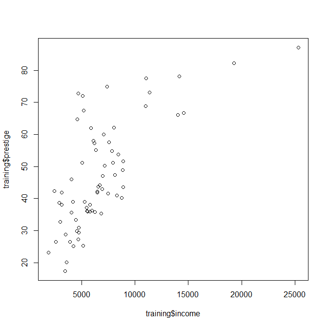
Let’s model the smoothing splines for various degrees of freedom. The df argument in the smooth.spline() function sets the degree of freedom, and then cv = T, does a cross-validation to find the optimal degrees of freedom. The sp_cv seems to say that the optimal number of degrees of freedonm is 4, let’s check that with some plots. As you can see, the more degrees of freedom you allow, the more curvature and overfitty the models get.
sp_cv = smooth.spline(x = training$income, y = training$prestige, cv =T)
sp_cv## Call:
## smooth.spline(x = training$income, y = training$prestige, cv = T)
##
## Smoothing Parameter spar= 1.072092 lambda= 0.005693696 (14 iterations)
## Equivalent Degrees of Freedom (Df): 4.039708
## Penalized Criterion (RSS): 8765.979
## PRESS(l.o.o. CV): 854.1636sp2 = smooth.spline(x = training$income, y = training$prestige, df = 2)
sp4 = smooth.spline(x = training$income, y = training$prestige, df = 4)
sp10 = smooth.spline(x = training$income, y = training$prestige, df = 10)
sp20 = smooth.spline(x = training$income, y = training$prestige, df = 20)
sp50 = smooth.spline(x = training$income, y = training$prestige, df = 50)
plot(x = Prestige$income, y = Prestige$prestige, main = "Income vs Prestige")
lines(sp2, col = "blue")
lines(sp4, col = "red", lwd = 2)
lines(sp10, col = "green")
lines(sp20, col = "orange")
lines(sp50, col = "black")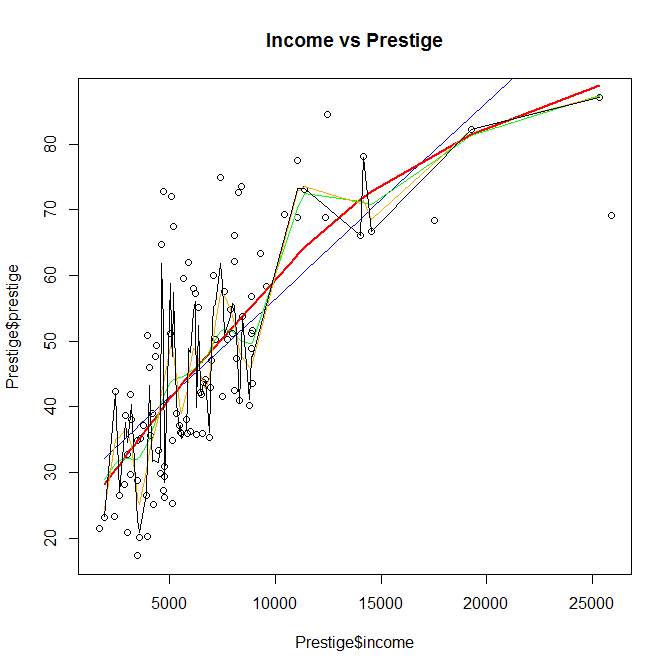
Now, that we have checked that a model with 4 degrees of freedom using splines seems to be the most optimal, let’s use it to predict test data. We can see that we have a mean squared error of 118 and a rmse of 10.88 (when Prestige has a range of ~60) so that is not that bad considering that only 1 predictor was used.
# install.packages('DMwR')
require(DMwR)
predicted = predict(sp_cv, test$income)$y
DMwR::regr.eval(test$prestige, predicted)## mae mse rmse mape
## 8.8769458 118.4485612 10.8834076 0.2088256The splines() package provides a couple of useful ways to produce new variables that could be used as exploratory variables in GAMs or linear models. For example the natural splines (ns() function) with 3 degrees of freedom gives 3 columns, which we can use to build generalized additive models.
require(splines)
head(ns(Prestige$income, df = 3))## 1 2 3
## [1,] 0.3993951 0.4373723 -0.1004036
## [2,] -0.1655583 0.3563004 0.8092579
## [3,] 0.2256924 0.5364234 -0.2499320
## [4,] 0.1897076 0.5529689 -0.2671500
## [5,] 0.1447406 0.5728679 -0.2859775
## [6,] 0.3453951 0.4743901 -0.1684402GAMs allow us to model the Y variable as an additive combination of non-linear functions of x, so that basically, instead of x we can use nonlinear functions of x. It is called additive because it calculates functions for each x and adds up their contributions. LEt’s use the MGCV package for this. We have an much better performance if you look at the results.
gamMod = mgcv::gam(prestige ~ ns(income,3) + ns(education,4) + type, data = training)
gamMod##
## Family: gaussian
## Link function: identity
##
## Formula:
## prestige ~ ns(income, 3) + ns(education, 4) + type
## Total model degrees of freedom 10
##
## GCV score: 52.34257predicted = predict(gamMod, test)
DMwR::regr.eval(test$prestige, predicted)## mae mse rmse mape
## 5.6301073 50.4088997 7.0999225 0.1408808